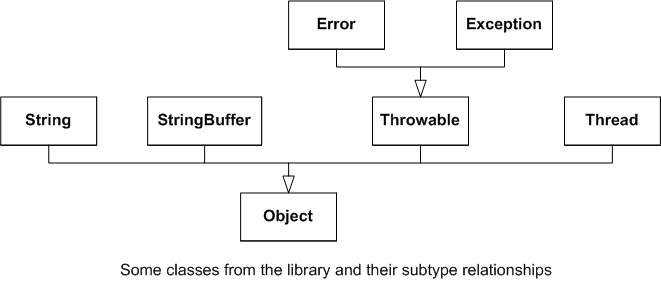

[Note: This section is largely for reference. As such it is rather definition heavy. I may not have time to cover it all in class, but you should read it and understand it.]
Now we are ready to list all the types in Java. Remember they fit into two groups
The first part of this section only deals with reference types that are not array types. Later we'll talk about arrays.
abstract class A { ... }
interface I0 { ... }
interface I1 { ... }
class C { ... }
Each class (with one exception) directly extends one class and directly implements 0 or more of interfaces
class W extends A implements I0, I1 {
... must implement all inherited abstract
methods of A, I0, I1 ... }
class X extends C implements I0, I1 {
... must implement all inherited abstract
methods of I0, I1 ... }
abstract class Y extends A implements I0, I1 {
... }
abstract class Z extends C implements I0, I1 {
... }
Interfaces can directly extend other interfaces. Classes that implement the subinterface must also implement the superinterfaces
interface I2 extends I0, I1 {
... }
(Here I2 is the subinterface while I0 and I1 are the superinterfaces.)
Each class directly extends exactly one class. (With one exception: java.lang.Object directly extends no class.)
If a class does not have an "extends" clause, it directly extends the library class java.lang.Object.
Therefore the set of classes forms a tree with java.lang.Object at its root.
Here is a picture of a part of the tree

In addition to extending another class, each class implements zero or more interfaces and each interface extends 0 or more other interfaces.
Suppose that S and T are two reference types.
We say that S is a direct subtype of T exactly if
We say that S is is a subtype of T exactly if
We say that S is a proper subtype of T exactly if
Note that S is a subtype of T iff it is a proper subtype or a S=T.
The compiler will check that no type is a proper subtype of itself. E.g., we can not declare that S extends T and that T extends S.
It follows that
The "instance of" relation has two important properties that together with the property of "run time type safety" make Java a safe programming language.
Property: Instances implement all declared methods.
Each class or interface T declares a set of method signatures. Any object that is an instance of T is sure to implement those signatures.
Property: Instances have all declared fields.
Each class T declares a set of fields. Any object that is an instance of T is sure to have all those fields.
Let's look at ArrayList<E> (for any particular reference type E) and consider all its supertypes.

You can see that any object that is a direct instance of ArrayList<Ball> is an indirect instance of AbstractList<Ball>, AbstractCollection<Ball>, Object, List<Ball>, Collection<Ball>, Iterable<Ball> RandomAccess, Clonable, and Serializable.
[Note on the prefixes super- and sub-: These come from Latin. Super- means, literally, "above" and sub- means, literally, "below", as in "superstructure" and "submarine". Nevertheless, I like to draw subtypes above their supertypes; this is because I like to draw types that depend on others above the types they depend on, like a building, where the floors above depend on the floors below for support. In C++ terminology, a supertype is called a "base type". "Base" means below as in basement.]
When the compiler is dealing with a type S, it knows the complete set of S's supertypes.
The compiler does not need to know the complete set of S's subtypes. This is important both for efficiency and because it allows libraries to be distributed in compiled form.
Each expression and variable in Java has a static type which can be calculated by the compiler.
For example: if variable r is declared to have reference type T, then every use of variable r has static type of T. Consider:
T r ; ... r.foo() ;
The static type of the reference r is T, regardless of what value r might actually have when the program executes.
Suppose S is a proper subtype of T. Now consider:
T r = new S() ;
r.foo() ;
Clearly r will actually refer to a direct instance of S, not T. We say that the dynamic type of r at run-time is S.
By the way, casting has no effect on dynamic type since it doesn't change which object is being referred to:
T r = (T) (new S()) ;
r.foo() ;
The dynamic type of r is still S.
[Aside: This cast is an 'up' cast meaning that the static type that is being cast from is a proper subtype of the type being cast to. 'up' casts in Java have no effect on the dynamic type. Up casts happen implicitly. In this example, the cast operation in entirely unneeded. The term "up" is consistant with the prefixes sub- and super-. ]
In the above examples, it is very easy to see what the dynamic type of r will be. However, it is not always possible to do so, hence the compiler is not expected to do so. Consider the dynamic type of r in the expression r.foo() here:
T r ; if( [some complex expression] ) r = new S() ; else r = new U() ; r.foo() ;
Or here
for( int i=0 ; i < N ; ++i ) { T r ; if( i%2 == 0) r = new S() ; else r = new U() ; r.foo() ; }
Or here
void bar(T r) {
...
r.foo() ; }
In general, we can not know what the dynamic type of an expression will be and, in fact, one expression might have a different dynamic type at different times during execution.
However Java supports the following property
Property: Run-time type safety.
The rules of the Java language, checked by the compiler, ensure that the dynamic type of any expression will be a subtype of its static type.
Or, to say the same thing a bit more precisely:
The rules of the Java language, checked by the compiler, ensure that an expression with a static type T will, at run-time,
- evaluate to the null reference,
- evaluate to a reference to an instance of T, or
- throw an exception. (Exceptions are covered later in the course.)
In some object-oriented programming languages, it is possible to send a message to an object, but find (at run time) that that object does not have a method that can handle the message. This is not possible in Java.
Putting the property of runtime type safety together with the property that instances implement all declared methods, and the fact that the compiler will check that methods exist in the static type, we find that when an expression of the form
E.m( A0, A1, ..., An)
is executed only the following can happen:
And similarly, from the property that instances have all declared fields, we find that when an expression of the form
E.f
is executed only the following can happen:
The compile-time rules that ensure run-time type safety are fairly simple.
Suppose r is an expression (representing a variable) with static type T and e is an expression of static type S:
Rule 0: r=e is allowed if S is a subtype of T.
Rule 1: r=e is allowed if T is Object.
Similar rules apply to initialization, to parameter passing, and returning a result from a method.
(Rule 1 is needed because S could be an interface and therefore not a subtype of Object, nevertheless the assignment is safe as, in Java, all objects are instances of Object.)
Note that these rules only apply when T is a reference type. When T is a primitive type, the rule is that S must be T or widen to T.
Now let's take another look at how method calls are checked and executed.
We'll consider a method call
e.foo()
where the static type of expression e is T.
At compile time:
At run time:
In other words, the choice of which method implementation to use is based on the dynamic type of e, not its static type.
Here is an example. Suppose that S and R are two subtypes of T and that S and R provide different implementations for method foo.
T r ; r = new S() ; r.foo() ; // Uses the implementation in S r = new R() ; r.foo() ; // Uses the implementation in R if( [some complex expression] ) r = new S() ; else r = new R() ; r.foo() ; // At run-time it is decided which // implementation to use.
The last call illustrates that the compiler can not (in general) determine which implementation of a method will be called. This determination is made at run-time.
(You might wonder how dynamic dispatch can be efficiently implemented. This is covered later in these notes. A Java specific explanation can be found in Chapters 5 and 8 of Inside the Java Virtual Machine.)
You can enquire about the dynamic type of an expression using the instanceof operator. For example
if( r instanceof T ) ...
r instanceof T is true if r refers to an instance of T. I.e., if r does not evaluate to null and r's dynamic type is a subtype of T.
If you find your self using instanceof, it is likely that you could design your code better. Code that depends on instanceof has a "bad smell" about it.
Above we assumed that S and T are not array types.
If T is an array type, it is considered to extend the library class Object and to implement the library interfaces java.io.Serializable and Clonable.
Object r = new int[10] ; // This is ok.
So far, so good.
There is one really weird rule about arrays though. Suppose S is a subtype of T and we have variables
S[] sa ; T[] ta ;
Then we can actually assign
ta = sa ;
even though the static type of sa is not a subtype of the static type of ta. Neither Rule 0 nor Rule 1 help. We need a new rule
Rule 2: Suppose r is a variable with static type T and e is a value of static type S:
r=e is allowed if S and T are array types and the item types are assignable.
and, of course, the same rule applies to initialization, argument passing, and returning results.
This rule leads to a problem. Consider the following program where S is a subtype of T, R is another subtype of T, but R is not a subtype of S.
//S is a subtype of T //R is a different subtype of T, but not a subtype of S
S[] sa = new S[10] ;
T[] ta = sa ;
ta[0] = new R();
This code actually compiles with no error or warning!
However, if it were to run, it would violate run-time type safety, as sa[0] would be an R object, not an S object.
So what really happens? Well, the code compiles, but it does not run to completion. The last statement causes a run-time error.
Whenever a reference is assigned to an array item, at run time there is a check that the reference is either null or points to an object of an appropriate type. If not, there is a run-time error.
Why?
Consider this example:
The last line is only allowed because of rule 2. However, we can see that the method does not assign to any item of the array, so the call is in fact perfectly safe.
Specializations of generic classes and interfaces follow similar rules to ordinary classes and interfaces. For example ArrayList<Player> is a subtype of List<Player>.
However, List<Player> is not a subtype of List<MovingObject> even though Player is a subtype of MovingObject.
Contrast the following example with the previous.